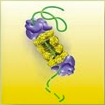
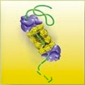

Welcome to my new lab at the Chemistry Department of Chemistry, National Taiwan University!
My lab will start in July, 2012. Before that time, I am working as a postdoctoral researcher on Alzheimer's Disease at Harvard Medical School.
I would like to invite enthusiastic graduate students (master and PhD), research assistants, and postdoctoral fellows to join my lab. We will take a highly multidisciplinary approach to explore unknown frontiers in chemical biology. One of these topics will be the cell biological mechanism of oxidized protein degradation. This is one of the very few fundamental processes in a cell that still remain largely unexplored, and offers exciting opportunities for both basic science discoveries and medical applications (like Alzheimer's Disease). We will study this problem in mammalian cell lines using proteomics methods (interactomes and shotgun protein mass spectrometry). Other experiments in the lab will involve standard molecular biology, biochemistry, and cell biology techniques, along with protein chemistry and fluorescence imaging. There will also be collaborations with other biomedical labs which have access to animal models and human patient samples.
With the completion of the new chemistry building in 2010, our department now offers a modern and comfortable environment for both education and research. The NTU campus is a lush, green environment, complete with a lake, a farm, and an old irrigation canal, but also faces one of the busiest commercial districts in Taipei.